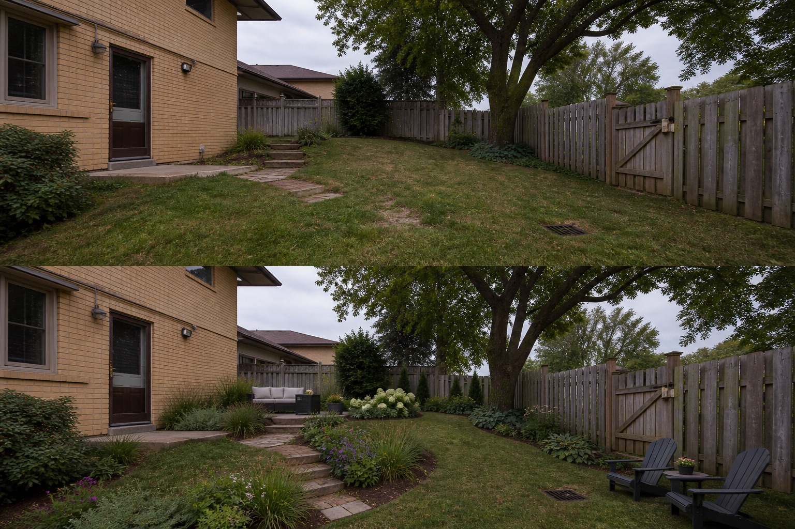

Audit the fixed facts
Compare doors, gates, fences, trees, drains, utilities, levels and camera alignment.
The most damaging AI garden design mistakes are hiding drains or services, moving boundaries, inventing level ground, removing mature structure, and treating visual materials or plants as verified choices. Keep a fixed-condition checklist beside every generated image.
Editorially reviewed August 24, 2026.
This AI-generated comparison is visual inspiration, not a measured plan, specification, safety assessment, cost estimate, local approval, plant recommendation, or construction guarantee.

Compare doors, gates, fences, trees, drains, utilities, levels and camera alignment.
Mark dimensions, materials, costs, plant suitability and permissions as unknown unless independently verified.
Check that the concept still supports access, maintenance, storage and ordinary movement.
The example keeps the house, door, gate, fence, tree, drain, slope, boundaries and camera unchanged.
Record doors, gates, paths, furniture movement, utilities, drains, roots, and maintenance access. Do not infer clearance from the image.
Note direct sun, shade, wind, overlooking, and views from inside across more than one time and season.
Locate falls, low points, downpipes, drains, and recurring wet areas. Preserve existing outlets.
Check permissions, product information, plant suitability, mature size, toxicity, invasiveness, upkeep, and applicable safety requirements.
Stop using a concept when it conceals a constraint, depends on invented facts, or encourages work that needs measurements, permission or specialist assessment.
Treating a persuasive image as evidence that the layout, materials or plants will work on the real site.
Compare it with the source photo and check every fixed condition, route, level, service and mature feature.
Yes, if you isolate the useful visual idea and clearly discard or verify every invented detail.
Upload a level, wide photo to compare restrained concepts before making physical changes.
AI-generated visualizations are concepts. Check local conditions and consult a qualified professional before construction or planting.